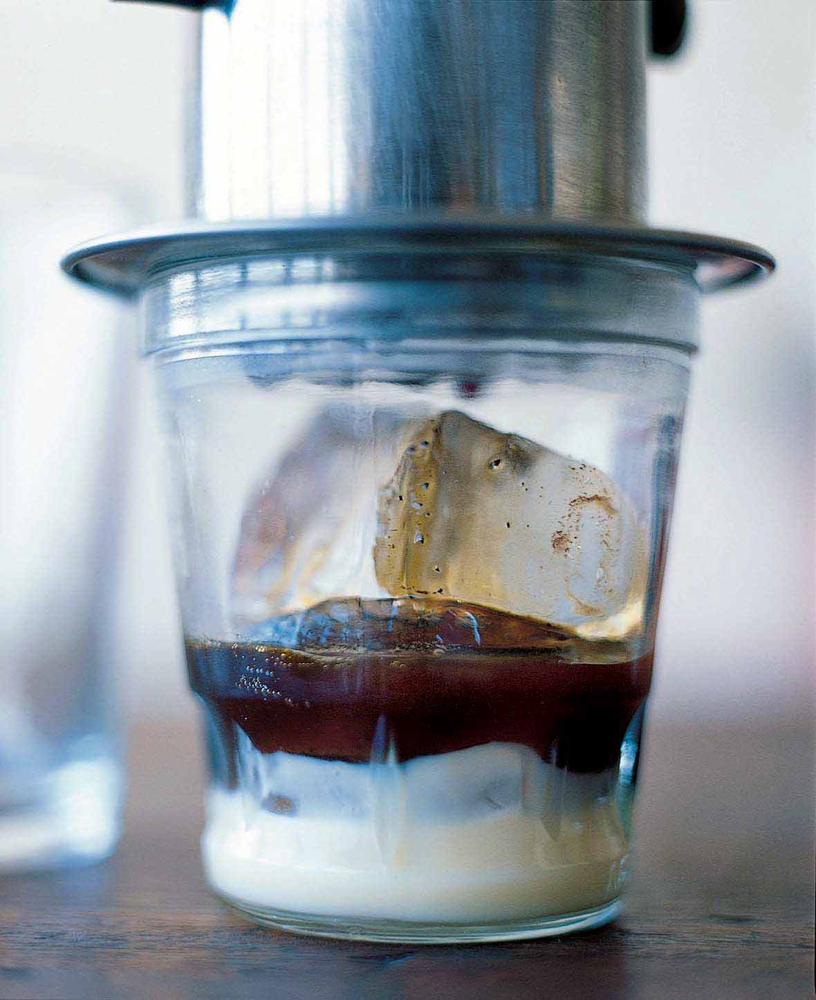

Vietnamese Iced Coffee

This looks pretty good. Lets get down to it, what would we need and how do we do it?
Ingredients
Ice (If you want it cold)
Vietnamese coffee grounds (I use the Nguyen Coffee Brand)
Condensed milk
Method
- Boil water. While boiling, put 3 table spoons of your coffee grounds into the dripper.
- Fill dripper with boiling water and let sit for 15-20 minutes.
- Walk dog if you have one.
- Add 2 tablespoons of condensed milk to cup and pour the steeped coffee into cup.
- Mix and enjoy! :)